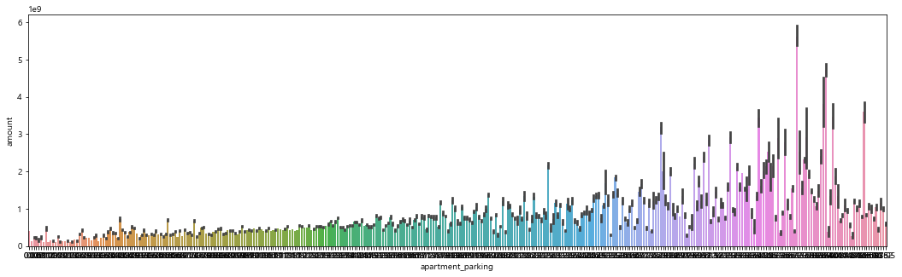

2. Feature selecting & 데이터 분석
- 클러스터링에 사용할 변수를 선택하기 위해 각 변수와 amount의 상관관계 파악에 중점을 두어 분석
- 데이터의 분포와 값을 살펴보면서 데이터에 대한 이해 증진
- 변수는 크게 5가지로 나누어 살펴볼 것
# 시계열에만 사용될 변수를 제거하고 heatmap을 사용해 상관관계를 살펴보았다
temp = df.drop(['apartment_id','area','year','month'],axis=1)
figure,ax1 = plt.subplots()
figure.set_size_inches(10,10)
sns.heatmap(temp.corr(),annot=True,cmap='YlGnBu')
png
- 수치상으로 세대당 주차대수, 학교 학생수, 지하철역과의 거리 변수가 상대적으로 실거래가와 높은 상관관계를 보인다
- 각 변수별로 자세히 알아보자
1) 연도별 거래액 및 면적
amount
- 2009년도부터 2013년까지의 실거래가가 감소하나, 2013년도부터 실거래가 증가

area
- 면적이 300이상인 아파트들은 찾아보기 힘들다. 대부분 200 이하의 값을 갖는다
- 면적이 400이상인 곳은 논현동, 도곡동, 방배동에 위치한 아파트다

2) 학교정보
- 538개의 학교가 있으며, 초등학교 데이터만 존재
학교 id
- 명목형 변수의 경우(학교id,지하철id,건설사id) id에 따른 산포도를 그리고 그 값이 고르게 분포하지 않고 편중되어 있을 경우, 그 변수가 클러스터링을 구분짓는 올바른 척도로 사용할 수 없다고 판단해 제거
- 학교 id에 따른 2019년도의 거래가를 구해서 분포를 살펴보니, 가격의 분포가 5억을 중심으로 정규분포에 근사하며 학교에 따라 다양한 값을 가짐
sample = df[df['school_students']>0]
sample = sample.groupby(['school_name','year'])['amount'].mean().reset_index()
sample_2019 = sample[sample['year']==2019]
sample_2019.head()figure,(ax1,ax2) = plt.subplots(nrows=1,ncols=2)
figure.set_size_inches(18,6)
sns.scatterplot(sample_2019['school_name'],sample_2019['amount'],ax=ax1)
sns.kdeplot(sample_2019['amount'],ax=ax2)
png
school_addr
- 학교 자치구 주소가 아파트의 주소와 값이 모두 동일하므로 제거
school_dist
- 아파트에서 가장 가까운 학교까지의 거리(분단위)
figure,ax1 = plt.subplots()
figure.set_size_inches(12,6)
sns.boxplot(x="school_dist",y="amount",data=df,color="m",ax=ax1)
png
- 아파트에서 학교까지의 거리에 따라 실거래가는 큰 차이를 보이지 않는다. 특히 17분 이하의 경우에는 거의 동일한 box plot을 가지므로 제거
- heatmap의 0.023 수치에서도 확인 가능
school_students
- 자치구별 세대수 인구를 구하고 세대수 대비 학교 학생 수의 비율을 구하였다
district_name 세대수 3 종로구 73947 4 중구 62739 5 용산구 110126 6 성동구 135838 7 광진구 164428
| index | school_name | school_students | amount | district_name | 세대수 | ratio | |
|---|---|---|---|---|---|---|---|
| 0 | 0 | 서울가곡초등학교 | 879.0 | 4.794164e+08 | 강서구 | 262708 | 0.003346 |
| 1 | 562 | 서울가동초등학교 | 947.0 | 6.759128e+08 | 송파구 | 278711 | 0.003398 |
| 2 | 1769 | 서울가락초등학교 | 812.0 | 7.367314e+08 | 송파구 | 278711 | 0.002913 |
| 3 | 1984 | 서울가양초등학교 | 235.0 | 3.622789e+08 | 강서구 | 262708 | 0.000895 |
| 4 | 2738 | 서울가원초등학교 | 630.0 | 1.038202e+09 | 송파구 | 278711 | 0.002260 |
- ratio는 각 자치구별 세대수와 학교 학생수의 비율을 구한것

png
- 비율은 0.00038과 0.015사이 , 0.015이상인 학교는 한 사례로 제거한다
- 비율에 따른 실거래가 regplot을 그려보았다
figure,ax1 = plt.subplots()
figure.set_size_inches(6,6)
sns.regplot(x="ratio",y="amount",data=df1,color="m",ax=ax1)
png
비율이 커질수록 아파트의 실거래가가 높아진다

구간별로 살펴보았을 때 자치구 세대수 인구 대비 학교 학생수의 비율이 커질수록, 실거래가 커지는 경향
3) 세대당 주차대수 apartment_parking
- 세대당 주차대수는 0~2대 사이에 주로 분포

figure,ax1 = plt.subplots()
figure.set_size_inches(18,5)
sns.barplot(data=df,x="apartment_parking",y="amount",ax=ax1) - 세대당 주차대수의 값이 커질수록 실거래가의 값이 점진적으로 우상향하는 것을 확인할 수 있다
4) 건설
apartment_building
- 2520개의 건설사 존재
- 건설사 id별 2019년도 평균 실거래가 분포를 살펴보았을 때, 10억 이하의 값으로 과도하게 편중되어 있으므로 제거
| apartment_builder | year | amount | |
|---|---|---|---|
| 3 | ((주)심원디엔씨) | 2019 | 344000000.0 |
| 13 | (유)25종합건설 | 2019 | 325000000.0 |
| 24 | (유)동호에스제이종합개발 | 2019 | 280000000.0 |
| 32 | (유)호원건설 | 2019 | 340000000.0 |
| 45 | (조한종합) | 2019 | 509999999.0 |
figure,(ax1,ax2) = plt.subplots(nrows=1,ncols=2)
figure.set_size_inches(18,6)
sns.scatterplot(sample_2019['apartment_builder'],sample_2019['amount'],ax=ax1)
sns.kdeplot(sample_2019['amount'],ax=ax2)
png
apartment_build_year
- 1970, 2020년대에 지어진 아파트의 수가 적은거에 비해 실거래가의 평균이 높으며, 2000년대에 가장 아파트가 많이 지어졌지만 낮은 실거래가의 값을 가짐

png
5) 지하철역
st_name
- 각 지하철역 id에 따른 2019년도 거래가 평균을 살펴보았을 때, 가격의 분포가 역에 따라 다양한 값을 갖는다
sample = df.groupby(['st_name','year'])['amount'].mean().reset_index()
sample_2019 = sample[sample['year']==2019]
sample_2019.head()| st_name | year | amount | |
|---|---|---|---|
| 13 | 4.19민주묘지역 | 2019 | 3.322311e+08 |
| 28 | 가락시장역 | 2019 | 1.131895e+09 |
| 43 | 가산디지털단지역 | 2019 | 3.877221e+08 |
| 58 | 가양역 | 2019 | 5.530393e+08 |
| 73 | 가오리역 | 2019 | 4.011351e+08 |

png
st_volume
- 환승역이 4개인 곳의 실거래가가 2014년도 이후부터 꾸준히 증가하며, 환승역의 개수 별 거래액이 큰 차이를 보이지 않는다 > 제거

png
st_dist
- 지하철역까지의 거리가 0.0247 이하인 경우 거리가 가까울 수록 실거래가가 커지는 경향이었으나, 0.0247보다 큰 경우에는 양의 상관관계를 보인다.
factor = pd.cut(df.st_dist,7)
a = df.amount.groupby(factor).mean()
a = pd.DataFrame(a)
a = a.reset_index()
figure,ax1 = plt.subplots()
figure.set_size_inches(18,5)
sns.barplot(data=a,x="st_dist",y="amount",ax=ax1)
png
df[df['st_dist']>0.0296]['apartment_addr_town'].drop_duplicates()- 양의 상관관계에 해당하는 동네는 평창동임을 확인할 수 있었다
feature selecting
- EDA를 거쳐 최종적으로 자치구별id, 행정동 id, 아파트 건축연도, 세대당 주차 대수, 학교id, 학교 학생수, 지하철 id, 지하철역과의 거리 변수를 클러스터링에 사용하기로 결정